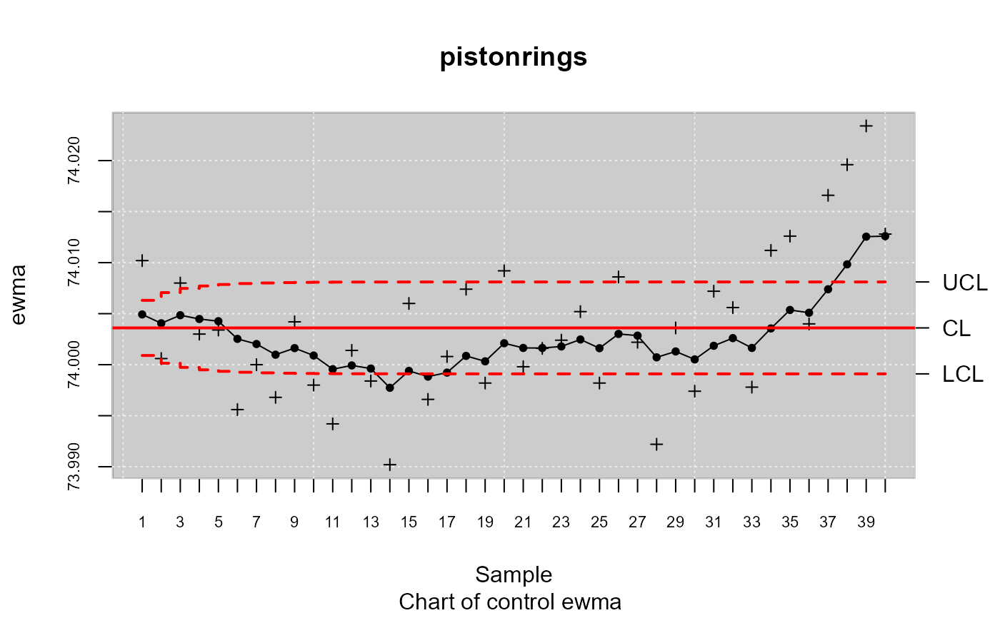

qcs.ewma.RdThis function is used to compute statistics required by the ewma chart.
This function is used to compute statistics required by the ewma chart.
qcs.ewma(x, ...) # S3 method for default qcs.ewma( x, var.index = 1, sample.index = 2, covar.index = NULL, covar.names = NULL, data.name = NULL, sizes = NULL, center = NULL, std.dev = NULL, nsigma = 3, lambda = 0.2, plot = FALSE, ... ) # S3 method for qcd qcs.ewma( x, center = NULL, std.dev = NULL, nsigma = 3, lambda = 0.2, plot = FALSE, ... )
| x | Object qcd (Quality Control Data) |
|---|---|
| ... | arguments passed to or from methods. |
| var.index | a scalar with the column number corresponding to the observed data for the variable (the variable quality). Alternativelly can be a string with the name of the quality variable. |
| sample.index | a scalar with the column number corresponding to the index each group (sample). |
| covar.index | optional. A scalar or numeric vector with the column number(s) corresponding to the covariate(s). Alternativelly it can be a character vector with the names of the covariates. |
| covar.names | optional. A string or vector of strings with names for the covariate columns. Only valid if there is more than one column of data. By default, takes the names from the original object. |
| data.name | a string specifying the name of the variable which appears on the plots. If not provided it is taken from the object given as data. |
| sizes | optional. A value or a vector of values specifying the sample sizes
associated with each group. For continuous data the sample sizes are obtained counting the non- |
| center | a value specifying the center of group statistics or the ''target'' value of the process. |
| std.dev | a value or an available method specifying the within-group standard deviation(s) of the process. Several methods are available for estimating the standard deviation in case of a continuous process variable. |
| nsigma | a numeric value used to compute control limits, specifying the number of standard deviations. |
| lambda | the smoothing parameter \(0 \le \lambda \le 1\) |
| plot | a logical value indicating it should be plotted. |
#> #> #>#> #> #>#> #> #>res.qcd <- qcd(pistonrings, type.data = "dependence") res.qcs <- qcs.ewma(res.qcd, type = "ewma") summary(res.qcs)#> ewma chart for pistonrings #> #> Summary of group statistics: #> ewma #> Min. :73.99 #> 1st Qu.:74.00 #> Median :74.00 #> Mean :74.00 #> 3rd Qu.:74.01 #> Max. :74.02 #> #> Group sample size: 5 #> Number of groups: 40 #> Center of group statistics: 74.0036 #> Standard deviation: 0.01007094 #> #> Control limits: #> LCL UCL #> 1 74.00090 74.00631 #> 2 74.00014 74.00707 #> 3 73.99974 74.00747 #> 4 73.99950 74.00771 #> 5 73.99935 74.00786 #> 6 73.99926 74.00795 #> 7 73.99920 74.00801 #> 8 73.99916 74.00805 #> 9 73.99914 74.00807 #> 10 73.99913 74.00808 #> 11 73.99912 74.00809 #> 12 73.99911 74.00810 #> 13 73.99911 74.00810 #> 14 73.99911 74.00810 #> 15 73.99910 74.00811 #> 16 73.99910 74.00811 #> 17 73.99910 74.00811 #> 18 73.99910 74.00811 #> 19 73.99910 74.00811 #> 20 73.99910 74.00811 #> 21 73.99910 74.00811 #> 22 73.99910 74.00811 #> 23 73.99910 74.00811 #> 24 73.99910 74.00811 #> 25 73.99910 74.00811 #> 26 73.99910 74.00811 #> 27 73.99910 74.00811 #> 28 73.99910 74.00811 #> 29 73.99910 74.00811 #> 30 73.99910 74.00811 #> 31 73.99910 74.00811 #> 32 73.99910 74.00811 #> 33 73.99910 74.00811 #> 34 73.99910 74.00811 #> 35 73.99910 74.00811 #> 36 73.99910 74.00811 #> 37 73.99910 74.00811 #> 38 73.99910 74.00811 #> 39 73.99910 74.00811 #> 40 73.99910 74.00811 #> #> Beyond limits of control: #> [1] 73.9902 #> #> Violationg runs: #> [1] 73.9966